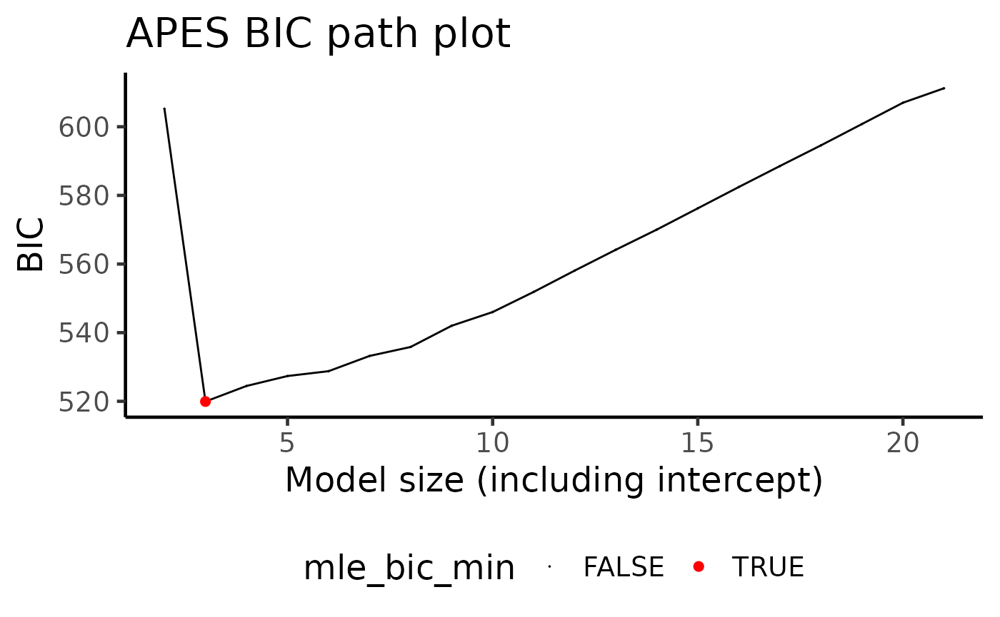

vignettes/APES.Rmd
APES.RmdAPproximated Exhaustive Search (APES) is a variable selection method for Generalised Linear Models (GLMs). The main motivation behind this work is to improve the speed of exhaustive variable selection for GLMs. The accompanying paper is Wang et. al. (2019).
Suppose we have simulated a data with 500 rows and 20 predictor
variables, and we have fitted a logistic regression model against a
binary response variable, y. This is what we term a “full”
model, i.e. a GLM that uses all available predictor variables in the
linear part of the model. We know, because we have generated the data
ourselves, that some of these variables are the true data generating
variables and looking at the model summary in this example, we see that
these variables happen to have p-values less than 0.05. So far, so good!
However, we can also expect to see some variables with p-values also
below the 0.05 cut-off by chance. In this case, is it still reasonable
to also include these variables in our final selected model?
library(APES)
set.seed(123)
n = 500
p = 20
k = 1:p
beta = c(1, -1, rep(0, p-2))
x = matrix(rnorm(n*p), ncol = p)
colnames(x) = paste0("X", 1:p)
y = rbinom(n = n, size = 1, prob = expit(x %*% beta))
data = data.frame(y, x)
## Fitting a full model
model = glm(y ~ ., data = data, family = "binomial")
summary(model)
#>
#> Call:
#> glm(formula = y ~ ., family = "binomial", data = data)
#>
#> Coefficients:
#> Estimate Std. Error z value Pr(>|z|)
#> (Intercept) 0.0939968 0.1150063 0.817 0.4137
#> X1 1.3208484 0.1473539 8.964 < 2e-16 ***
#> X2 -1.1514327 0.1408347 -8.176 2.94e-16 ***
#> X3 -0.1374777 0.1199204 -1.146 0.2516
#> X4 -0.1833097 0.1131186 -1.621 0.1051
#> X5 0.0592351 0.1245528 0.476 0.6344
#> X6 -0.0042151 0.1116729 -0.038 0.9699
#> X7 0.0333918 0.1140984 0.293 0.7698
#> X8 0.0544283 0.1150397 0.473 0.6361
#> X9 -0.0002908 0.1185977 -0.002 0.9980
#> X10 0.0070470 0.1191136 0.059 0.9528
#> X11 0.2215954 0.1197092 1.851 0.0642 .
#> X12 -0.0181208 0.1129557 -0.160 0.8725
#> X13 0.2642200 0.1134691 2.329 0.0199 *
#> X14 -0.1555926 0.1167591 -1.333 0.1827
#> X15 0.1706575 0.1209544 1.411 0.1583
#> X16 0.2097983 0.1134567 1.849 0.0644 .
#> X17 -0.0967993 0.1118631 -0.865 0.3869
#> X18 -0.0460395 0.1103086 -0.417 0.6764
#> X19 -0.0127950 0.1170941 -0.109 0.9130
#> X20 0.0626407 0.1140707 0.549 0.5829
#> ---
#> Signif. codes: 0 '***' 0.001 '**' 0.01 '*' 0.05 '.' 0.1 ' ' 1
#>
#> (Dispersion parameter for binomial family taken to be 1)
#>
#> Null deviance: 692.76 on 499 degrees of freedom
#> Residual deviance: 480.70 on 479 degrees of freedom
#> AIC: 522.7
#>
#> Number of Fisher Scoring iterations: 5The question of which variable(s) a practitioner should select is very common. One of the most intuitive variable selection methods is to enumerate all possible combinations of variables and select the best corresponding model using a fit statistic. This is known as exhaustive variable selection. In total, there are \(2^p\) possibilities to explore, with \(p\) being the number of predictors. However, in performing an exhaustive variable selection for this data, we will be looking through \(2^{20} = 1,048,576\) models! If each model takes one thousandth of a second to compute, then this exhaustive variable selection will take about 15 minutes to run — seems too long!
At its core, APES is designed to speed up this variable selection
procedure. APES will first convert the full logistic model into a linear
model. The reason for doing this is that the exhaustive variable
selection can be performed computationally much faster in the linear
model space. In addition, linear models can benefit from best-subset
algorithms which can search for the best linear model without searching
through all \(2^p\) candidate models.
By default, APES uses the leaps-and-bound algorithm (from the
leaps package) and mixed integer optimisation (from the
bestsubset package) algorithm as the best-subset algorithms
of choice. After obtaining a set of best-fit models, APES will convert
the results back to into logistic models and show the best model of each
size. While the word “best” can be subjective depending on the data
context, in our example, we define this word as the model with the
smallest information criterion value with the most common choices being
the Akaike Information Criterion (AIC) and the Bayesian Information
Criterion (BIC).
It is important to note that APES only returns the best approximation to the exhaustive search, however, through extensive simulations in our paper, we have demonstrated that APES tends to always return an informative model that is close to a genuine exhaustive search.
The APES package is designed to provide a user-friendly
interface to perform APES variable selection. The main function in the
APES package is the apes function which
accepts a glm object in R. This is typically
the “full model” with all available predictors fitted.
apes_result = apes(model = model)
#> No variable size specified, searching all sizes from 1 to p...
class(apes_result)
#> [1] "apes"The apes function returns an apes class
object. By default, APES prints the model selected by the AIC and BIC
and the time taken. There are extra computed results in the
apes object which a user might be interested in further
exploring.
print(apes_result)
#> Time taken: 6.960233e-05 minutes
#>
#> APES - AIC selected the following variables
#> intercept X1 X2 X3 X4 X5 X6 X7
#> 0.082 1.284 -1.137 0.000 -0.161 0.000 0.000 0.000
#> X8 X9 X10 X11 X12 X13 X14 X15
#> 0.000 0.000 0.000 0.221 0.000 0.252 -0.162 0.000
#> X16 X17 X18 X19 X20
#> 0.208 0.000 0.000 0.000 0.000
#>
#> APES - BIC selected the following variables
#> intercept X1 X2 X3 X4 X5 X6 X7
#> 0.064 1.226 -1.093 0.000 0.000 0.000 0.000 0.000
#> X8 X9 X10 X11 X12 X13 X14 X15
#> 0.000 0.000 0.000 0.000 0.000 0.000 0.000 0.000
#> X16 X17 X18 X19 X20
#> 0.000 0.000 0.000 0.000 0.000
names(apes_result)
#> [1] "apes_model_df" "apes_mle_beta" "apes_mle_beta_binary"
#> [4] "time_used" "selected_model_beta" "model_avg_beta"
#> [7] "response_tibble"The most important output is apes_model_df, which is a
data.frame/tibble of the best model of each
model size computed by APES.
apes_result$apes_model_df
#> # A tibble: 20 × 7
#> model_name model_size ic_opt_models apes_mle_loglike mle_aic mle_bic status
#> <chr> <dbl> <chr> <dbl> <dbl> <dbl> <chr>
#> 1 apes_model_2 2 "" -296. 597. 605. leaps…
#> 2 apes_model_3 3 "apes_min_bi… -251. 507. 520. leaps…
#> 3 apes_model_4 4 "" -250. 508. 524. leaps…
#> 4 apes_model_5 5 "" -248. 506. 527. leaps…
#> 5 apes_model_6 6 "" -246. 503. 529. leaps…
#> 6 apes_model_7 7 "" -245. 504. 533. leaps…
#> 7 apes_model_8 8 "apes_min_ai… -243. 502. 536. leaps…
#> 8 apes_model_9 9 "" -243. 504. 542. leaps…
#> 9 apes_model_… 10 "" -242. 504. 546. leaps…
#> 10 apes_model_… 11 "" -242. 506. 552. leaps…
#> 11 apes_model_… 12 "" -242. 508. 558. leaps…
#> 12 apes_model_… 13 "" -242. 509. 564. leaps…
#> 13 apes_model_… 14 "" -242. 511. 570. leaps…
#> 14 apes_model_… 15 "" -242. 513. 576. leaps…
#> 15 apes_model_… 16 "" -242. 515. 582. leaps…
#> 16 apes_model_… 17 "" -241. 517. 589. leaps…
#> 17 apes_model_… 18 "" -241. 519. 595. leaps…
#> 18 apes_model_… 19 "" -241. 521. 601. leaps…
#> 19 apes_model_… 20 "" -241. 523. 607. leaps…
#> 20 apes_model_… 21 "" -240. 523. 611. leaps…By default, apes will always include the intercept term
in the variable selection, and thus the selected models are always of
size two (one intercept and one variable) and above. You may also be
interested in plotting apes_result using the generic
function plot
plot(apes_result)
The example above is a simple simulation to illustrate the basic
underlying theory of APES and the apes object. Please see a
birth
weight data example and a diabetes
data example where we will demonstrate the performance of
APES using bootstrap sampling to assess model
stability.
sessionInfo()
#> R version 4.3.2 (2023-10-31)
#> Platform: x86_64-pc-linux-gnu (64-bit)
#> Running under: Ubuntu 22.04.3 LTS
#>
#> Matrix products: default
#> BLAS: /usr/lib/x86_64-linux-gnu/openblas-pthread/libblas.so.3
#> LAPACK: /usr/lib/x86_64-linux-gnu/openblas-pthread/libopenblasp-r0.3.20.so; LAPACK version 3.10.0
#>
#> locale:
#> [1] LC_CTYPE=C.UTF-8 LC_NUMERIC=C LC_TIME=C.UTF-8
#> [4] LC_COLLATE=C.UTF-8 LC_MONETARY=C.UTF-8 LC_MESSAGES=C.UTF-8
#> [7] LC_PAPER=C.UTF-8 LC_NAME=C LC_ADDRESS=C
#> [10] LC_TELEPHONE=C LC_MEASUREMENT=C.UTF-8 LC_IDENTIFICATION=C
#>
#> time zone: UTC
#> tzcode source: system (glibc)
#>
#> attached base packages:
#> [1] stats graphics grDevices utils datasets methods base
#>
#> other attached packages:
#> [1] APES_1.0.0
#>
#> loaded via a namespace (and not attached):
#> [1] gtable_0.3.4 xfun_0.41 bslib_0.5.1 ggplot2_3.4.4
#> [5] ggrepel_0.9.4 lattice_0.21-9 vctrs_0.6.4 tools_4.3.2
#> [9] generics_0.1.3 parallel_4.3.2 tibble_3.2.1 fansi_1.0.5
#> [13] highr_0.10 pkgconfig_2.0.3 Matrix_1.6-1.1 RColorBrewer_1.1-3
#> [17] desc_1.4.2 lifecycle_1.0.3 compiler_4.3.2 farver_2.1.1
#> [21] stringr_1.5.0 textshaping_0.3.7 munsell_0.5.0 leaps_3.1
#> [25] codetools_0.2-19 htmltools_0.5.6.1 sass_0.4.7 yaml_2.3.7
#> [29] pillar_1.9.0 pkgdown_2.0.7 furrr_0.3.1 jquerylib_0.1.4
#> [33] tidyr_1.3.0 cachem_1.0.8 parallelly_1.36.0 gtools_3.9.4
#> [37] tidyselect_1.2.0 digest_0.6.33 stringi_1.7.12 future_1.33.0
#> [41] dplyr_1.1.3 reshape2_1.4.4 purrr_1.0.2 listenv_0.9.0
#> [45] labeling_0.4.3 forcats_1.0.0 splines_4.3.2 rprojroot_2.0.3
#> [49] fastmap_1.1.1 grid_4.3.2 colorspace_2.1-0 cli_3.6.1
#> [53] magrittr_2.0.3 survival_3.5-7 utf8_1.2.4 withr_2.5.2
#> [57] scales_1.2.1 rmarkdown_2.25 globals_0.16.2 ragg_1.2.6
#> [61] memoise_2.0.1 evaluate_0.23 knitr_1.45 rlang_1.1.1
#> [65] Rcpp_1.0.11 glue_1.6.2 jsonlite_1.8.7 R6_2.5.1
#> [69] plyr_1.8.9 systemfonts_1.0.5 fs_1.6.3